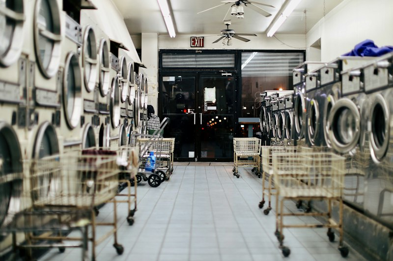
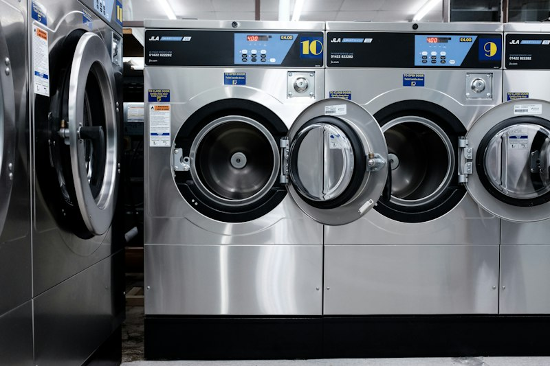
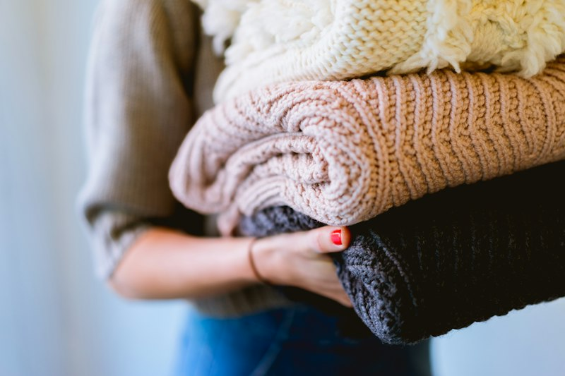
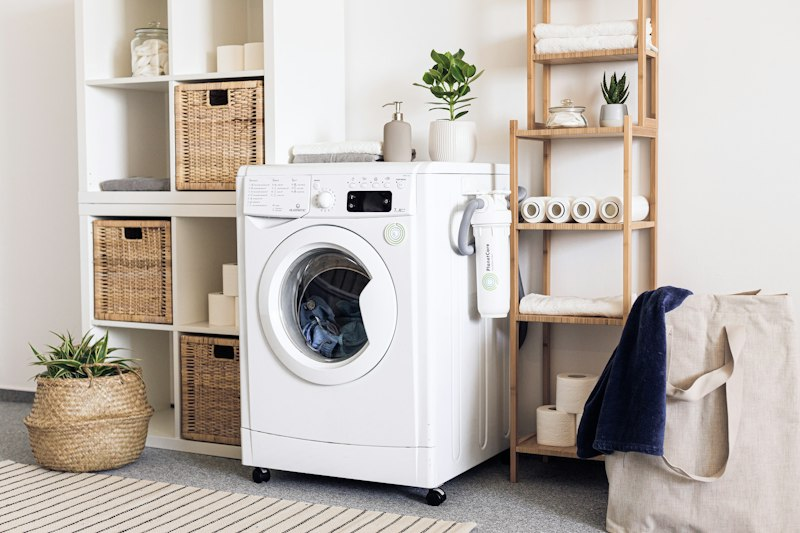
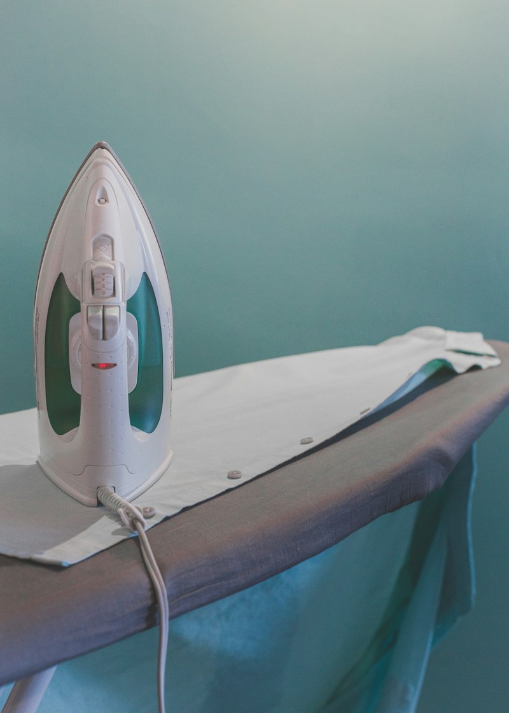

IKKY LAUNDRYIN COIN
IKKY LAUNDRYIN COIN adalah layanan laundry koin mandiri yang praktis dan modern. Kami hadir untuk membantu aktivitas harianmu dengan fasilitas mesin cuci dan pengering berkualitas tinggi yang mudah digunakan oleh siapa saja. Cukup siapkan koin, pilih mesin, dan nikmati layanan laundry bersih dan higienis tanpa perlu menunggu lama.
Profil Pemilik & Komitmen Layanan
Mengenal komitmen di balik kenyamanan, kebersihan, dan higienitas IKKY LAUNDRYIN COIN.
Ikky & Tim Laundryin
Pemilik & Pengelola IKKY LAUNDRYIN COIN
Chat Langsung ke PemilikBerkomitmen menghadirkan layanan laundry koin mandiri yang bersih, higienis, dan terpercaya. Pakaian setiap pelanggan kami jaga agar tidak pernah tercampur, mesin terawat rutin, dan suasana outlet selalu sejuk dan nyaman untuk dikunjungi setiap hari.
4 Jaminan Kualitas untuk Setiap Pelanggan:
Mengapa Memilih Kami?
Kami menghadirkan pengalaman laundry mandiri terbaik dengan 4 keunggulan utama.
Mudah & Cepat
Proses laundry yang sangat mudah dan cepat. Cukup masukkan koin, pilih program, dan mesin otomatis jalan. Tidak perlu antri panjang.
Bersih & Higienis
Mesin cuci terawat dan dibersihkan secara rutin. 1 mesin hanya untuk 1 pelanggan tanpa dicampur baju orang lain.
Hemat Waktu
Cuci dan kering selesai dalam hitungan menit. Kamu bisa menunggu sambil santai atau mengerjakan hal lain dengan efisien.
Mesin Cuci & Pengering
Tersedia lengkap mesin cuci dan pengering komersial di satu tempat. Baju kering tuntas siap lipat tanpa perlu dijemur.
Layanan Mesin Cuci & Pengering
Dua mesin andalan berkapasitas besar siap membantu pakaianmu bersih wangi dan kering tuntas.

Mesin Cuci (Washer)
Layanan mesin cuci self-service dengan drum kapasitas besar. 1 mesin khusus untuk pakaianmu sendiri tanpa dicampur orang lain. Dilengkapi sistem pencucian higienis berteknologi tinggi untuk hasil bersih maksimal.
- 1 Mesin khusus sendiri, tidak dicampur
- Putaran drum stabil dan serat kain terjaga
- Hasil bersih optimal dan harum segar

Mesin Pengering (Dryer)
Layanan pengering pakaian berkecepatan tinggi dengan suhu stabil. Pakaian kering 100% tuntas, hangat, dan siap langsung dilipat tanpa perlu dijemur lagi di bawah terik matahari.
- Pengering bertenaga tinggi, bebas bau apek
- Kering tuntas 100% siap langsung lipat
- Bebas cemas saat musim hujan
Cara Menggunakan Layanan
Hanya 4 langkah simpel: masukkan koin, pakaian bersih dan kering tanpa ribet.
Masukkan Koin Sesuai Harga
Siapkan koin sesuai harga layanan yang dipilih, lalu masukkan ke slot koin pada mesin yang tersedia.
Pilih Mesin Cuci / Pengering
Pilih mesin cuci atau mesin pengering sesuai kebutuhan pakaianmu. Masukkan pakaian ke dalam drum mesin.
Tekan Tombol Mulai (Start)
Setelah pakaian dan deterjen siap, tekan tombol START. Mesin akan langsung beroperasi secara otomatis.
Pakaian Bersih & Kering Selesai
Tunggu beberapa menit hingga alarm selesai berbunyi. Pakaianmu sudah bersih, harum, kering, dan siap dipakai.
Suasana Outlet Kami
Kondisi fasilitas laundry kami yang bersih, rapi, dan terawat siap menyambut kehadiranmu.




Kunjungi Outlet Kami
Datang langsung ke lokasi IKKY LAUNDRYIN COIN atau hubungi kami untuk informasi selengkapnya.
Jl. Utama Laundry No. 88 (Dekat Area Kampus & Pemukiman Warga)
Akses jalan mudah & parkir motor/mobil aman0812-3456-7890
Chat WhatsApp SekarangIkky & Tim Laundryin
Pemilik & Pengelola IKKY LAUNDRYIN COINBuka Setiap Hari: 06.00 – 22.00 WIB (Termasuk Tanggal Merah)
Tetap buka di hari libur & tanggal merahCuci Bersih, Kering Cepat, Tanpa Ribet!
Bawa pakaian kotormu hari ini ke IKKY LAUNDRYIN COIN. Tinggal masukkan koin, langsung jalan!